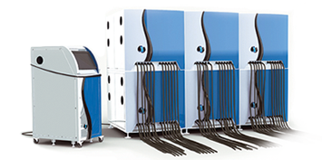
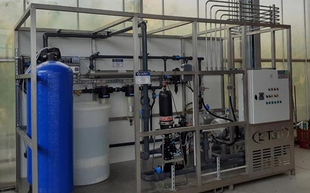

Guillaume Belaud
Quai de prise en charge containers (Vendée Concept)
Générateur haute puissance pulsée (Bmax)
Station de brumisation (Squiban)
Automaticien de formation, j'ai pu développer des process clé en mains, plus ou moins complexe, de la programmation à la mise en service chez le client.
J'ai principalement travaillé sur des automates de marque Siemens (types : S7 1500, S7 1200, ET200SP CPU, LOGO!),
Schneider Electric (types : M340, Twido), Unitronics (types : Jazz, M91) et Delta Electronics (gamme : DVP Series Slim).
Ci-dessous, une liste non-exhaustive de projets sur lesquels j'ai été amené à travailler :
Pour les besoins d'un projet, j'ai été formé à la programmation de robots 4 et 6 axes Staübli sur centrales CS8 et CS8C en langage VAL3.
Cela a permis la réalisation de plusieurs cellules robotisées autonômes de productions de petites pièces destinées au domaine du luxe.
L'objectif était de transporter de petites pièces à former d'un point A à un point B à l'aide de ventouses et d'effectuer un premier contrôle de qualité sur les produits finis en vérifiant que celles-ci n'étaient pas percées après formage (scrutation du niveau de vide dans les ventouses)
et faire ainsi un premier tri à la volée pièces bonnes / rebuts.
Gamme robots Staübli